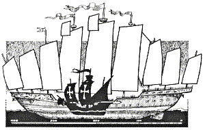

Comparing the size of Noah's Ark
Noah's Ark was big but not an impossible size for wood. Steel is a superior material for shipbuilding, so a wooden hull will never reach the lengths of steel hulls. Larger hulls are more difficult to build since stresses are related to scale (See the square/cube law)
Besides length, a ship hull is dependent on other factors for its structural safety. Increased hull depth improves bending strength, the shape of the hull can lower the wave loads. For calculations based on standard ship rules see Wave Bending Moment.
The following Flash presentation compares Noah's Ark to a collection of famous ships. Use the Forward button (bottom right) to compare each ship. The ships are in approximate chronological order.
In 1993, research was carried out by naval architects and structural engineers at the world class KRISO ship research facility in Korea, testing the proportions described in Genesis - 300 x 50 x 30 cubits. They concluded that the proportions were near optimal and that the scale was feasible in waves up to 30m. Korean Research
Requires Flash 6 player. (For previous javascript comparison go to ship comparison file)
The last 500 years have seen a dramatic progression in ship size and marine technology. Prior to the European led scientific and industrial revolution the development was sporadic - even showing clear evidence of loss of technology. Despite the difficulty piecing together early maritime history due to scarcity of remains, there is ample evidence to indicate the Greek trireme reached a level of perfection not seen in Europe until 2000 years later. The trireme was lightweight yet strong enough to endure ramming forces at the bow. Hull integrity was achieved with a highly refined design innovation that escaped the later Europeans (See Mortise and Tenon Planking). Another example of ship building regression is found in China, where the treasure ships of Cheng Ho (1) were centuries ahead of European shipbuilding and may have been the largest timber ships ever built. For various reasons China went backwards in maritime prowess after the 1400's. Even less is known of India's shipbuilding history, except for enormous dry docks that point to an even earlier advanced naval technology.
1. Zheng He (Cheng Ho) treasure ships. Chinese units of length varied considerably, which makes it difficult to pinpoint the exact size of these ships. The range of length is approx 120 to 180m (400 to 600 ft), certainly of a similar scale to Noah's Ark and possibly even larger. Most illustrations and models attempting to reconstruct the flagships are almost certainly overstating the mast height. For example, the Jan Adkins 1993 illustration below shows a mast comparable to the world record carbon fiber mast of Mirabella V, built in 2004.

Illustration Jan Adkins 1993 http://www.chinapage.org/zhenghe.html
A more realistic mast height is illustrated by Philip Nicholson for TIME Inc 2001 at http://www.time.com/time/asia/features/journey2001/greatship.html A combined design is shown in the Flash animation, based on a variety of pictures but applying a reasonable maximum mast height for timber. Return to text
Benjamin Franklin suggested as early as 1784, that ships of his day should copy the Chinese model of dividing the hull into watertight compartments (holds) so that if a leak occurred in one compartment, the water would not sink the ship. http://sln.fi.edu/franklin/inventor/inventor.html
Europe vs China:
There have been some who doubt the records of the Treasure Ships, claiming the Chinese foot (chi) was variable. Yet even using a smaller chi these ships dwarfed anything the Europeans built out of wood - ever. The doubts are not so much about the historical records themselves, but a "taken for granted" belief that such a large wooden ship could not handle the open sea. This same doubt is directed at Noah's Ark by skeptics of the Bible.
Interestingly, most of the Treasure Ship doubters are of European descent, but Chinese academics promote the idea. How dare the Chinese disrupt the Eurocentric view portrayed in all those picture books with a sweet little "evolution" of ships.
Not content to stay within the confines of obscure academic journals, the Chinese built a replica for the world to see - and experience. It doesn't float, but it is big - very big. The design is quite similar to the Jan Adkins design I based my concept on, but the masts are much smaller - as expected..
To view more pictures, go to this site;
http://www.viewimages.com/Search.aspx?mid=71820265&epmid=1&partner=Google